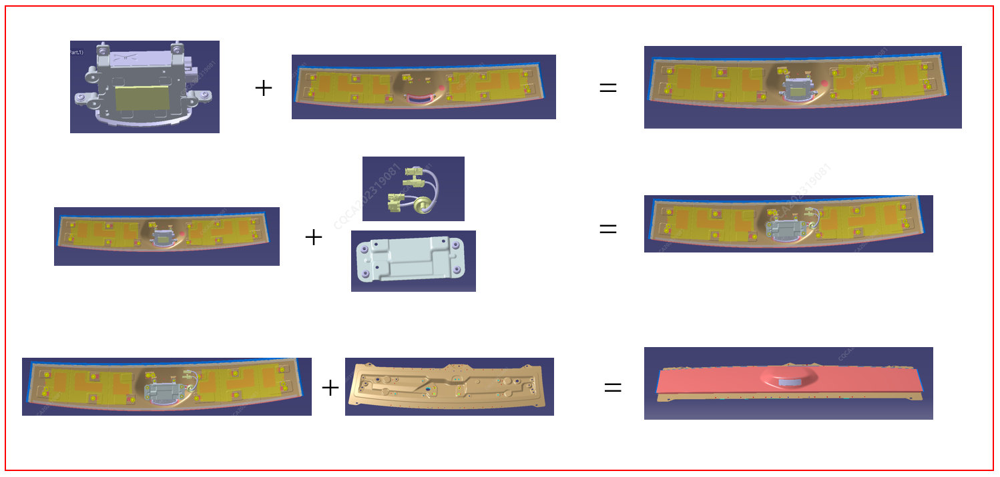
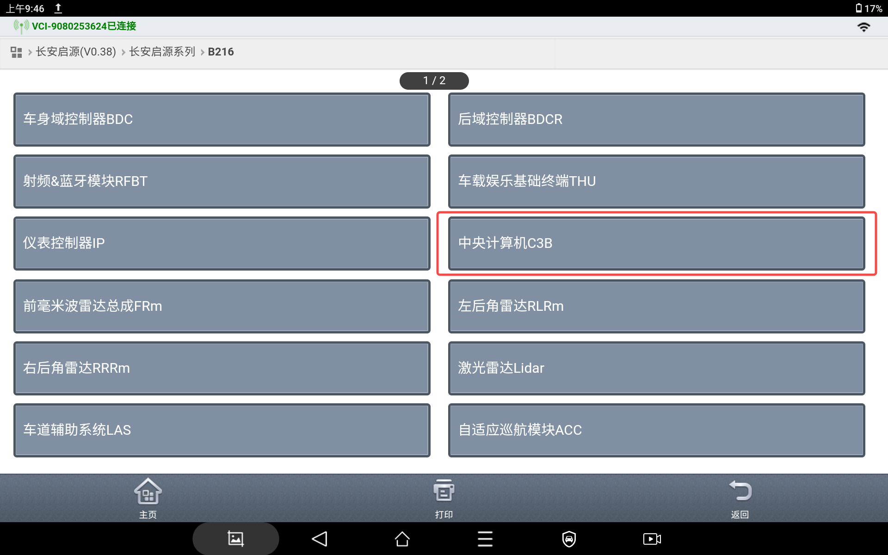
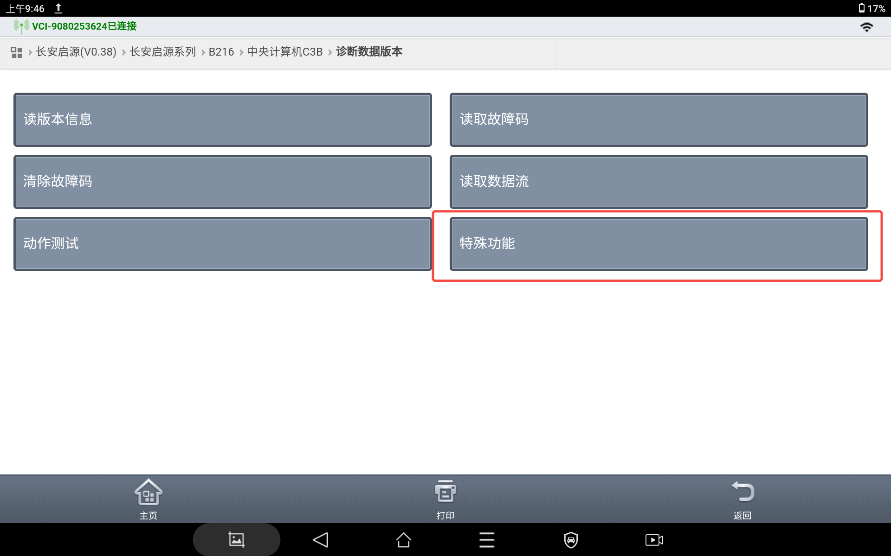
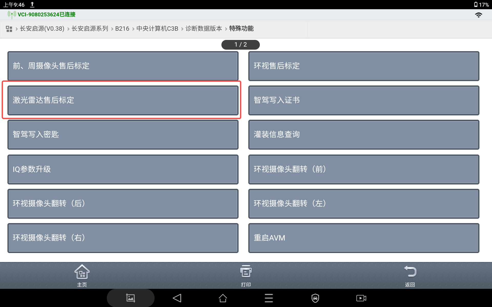
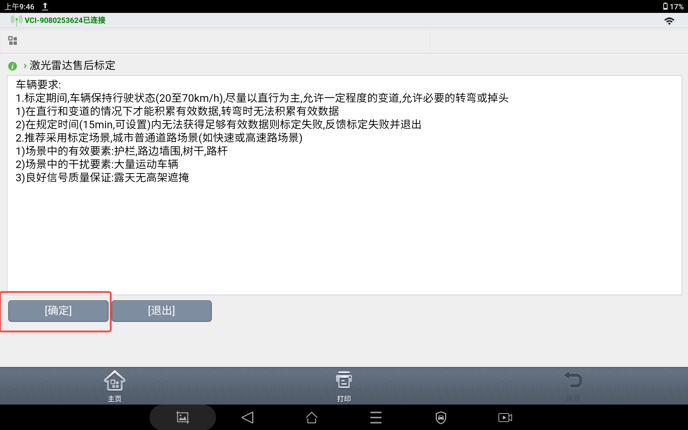
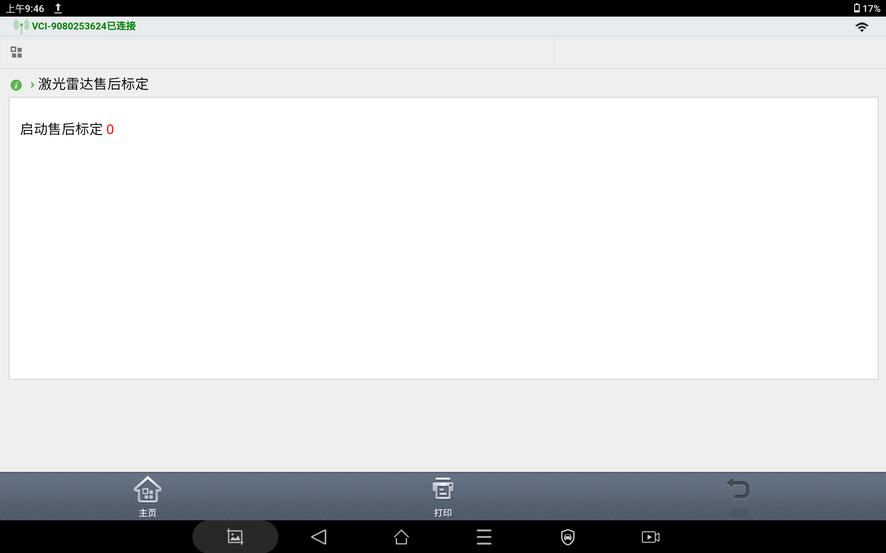

安装步骤
2、外饰板（带雷达总成）+线束+转接支架，螺栓拧紧（09116-05005-S213，M5*3）；
3、外饰板（整体）+钣金横梁；螺栓拧紧（09116-06012，M6*4）；
拆卸步骤
拆卸步骤与安装步骤相反。
激光雷达更换均需到诊断仪上进行激光雷达标定操作，激光雷达标定操作流程如下。通过诊断仪链接到车辆，选择“长安启源系列”，进入对应车型，选择“中央计算机C3B”。

进入“诊断数据版本”，选择“特殊功能”。

选择“激光雷达售后标定”。

按照要求寻找标定场景，点击“确定”。

启动标定，直至标定完成。

要求：
1. 标定期间,车辆保持行驶状态（20至70 km/h），尽量以直行为主，允许一定程度的变道，允许必要的转弯或掉头；
1）在直行和变道的情况下才能积累有效数据，转弯时无法积累有效数据；
2）在规定时间（15min，可设置）内无法获得足够有效数据则标定失败收，反馈标定失败并退出。
2. 推荐采用标定场景,城市普通道路场景(如快速或高速路场景)；
1）场景中的有效要素：护栏，路边墙围，树干，路杆；
2）场景中的干扰要素：大量运动车辆；
3）良好信号质量保证：露天无高架遮掩。